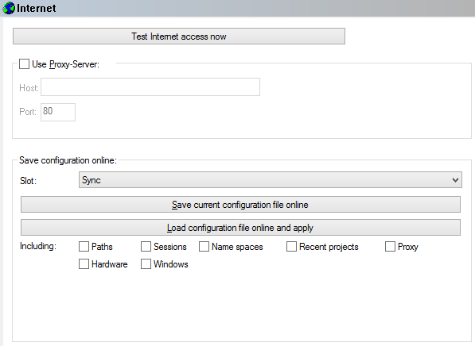

|
The dialog Configuration / Miscellaneous / Internet (Menu Miscellaneous) |

  
|
|
The dialog Configuration / Miscellaneous / Internet (Menu Miscellaneous) |
|

Test:
Several WinOLS functions can access the internet. Here you can check the access to the internet and the EVC website for various typical problems.
Proxy:
Furthermore you configure here whether WinOLS should use a proxy server to contact the internet. Please contact your network administrator for details.
If your proxy requires a login with username and password, please enter this as "host" in the format "username:password@proxy".
Save configuration online:
You can save your configuration file online on evc.de. For example to have a backup or to use the same configuration on multiple PCs. For this you can choose between multiple slots on the server.
Please note: This function uses the currently *saved* configuration. Changes that you just made, but didn't confirm with OK are ignored.
Shortcuts
| Symbol bar: |
| Keyboard: | F12 |